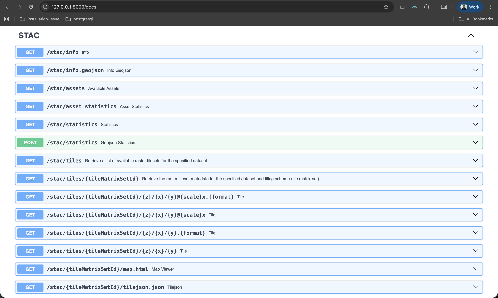
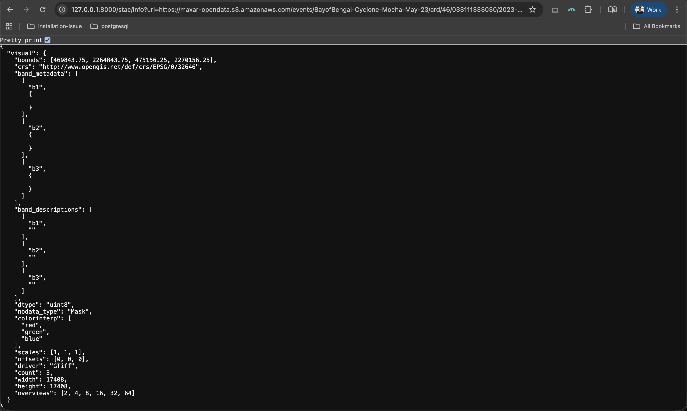
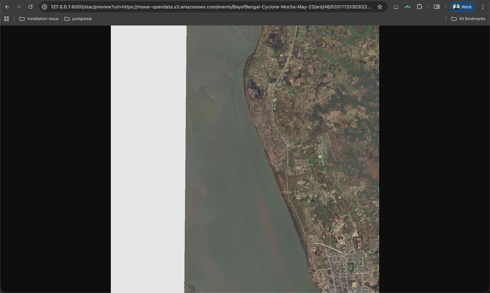
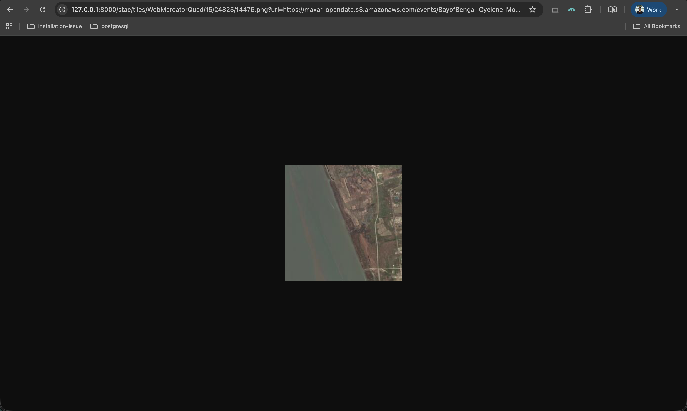
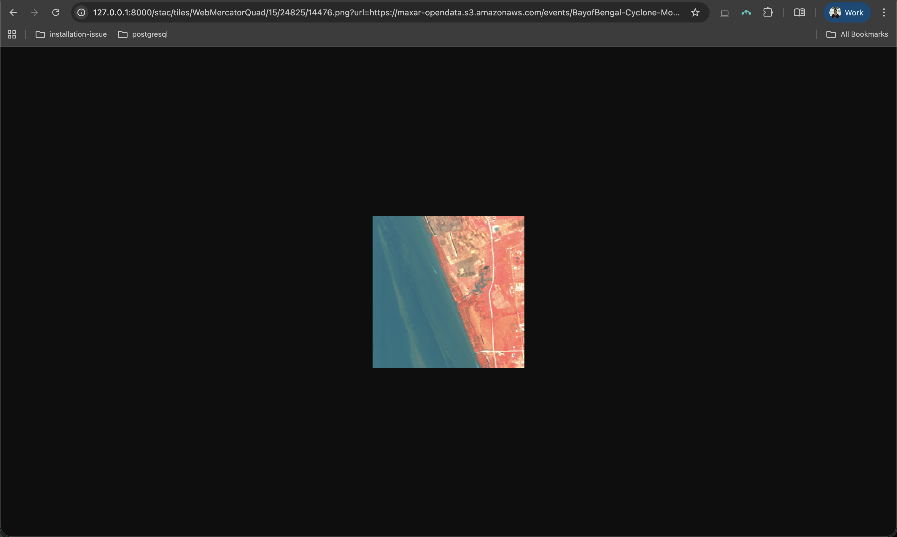
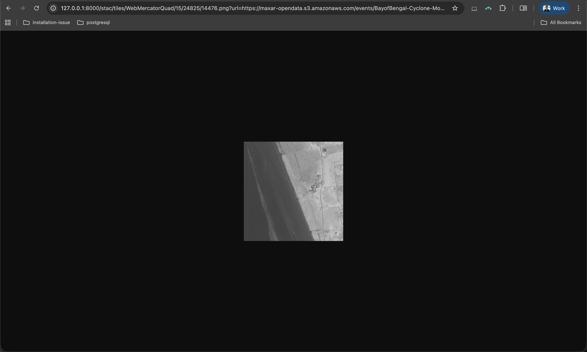
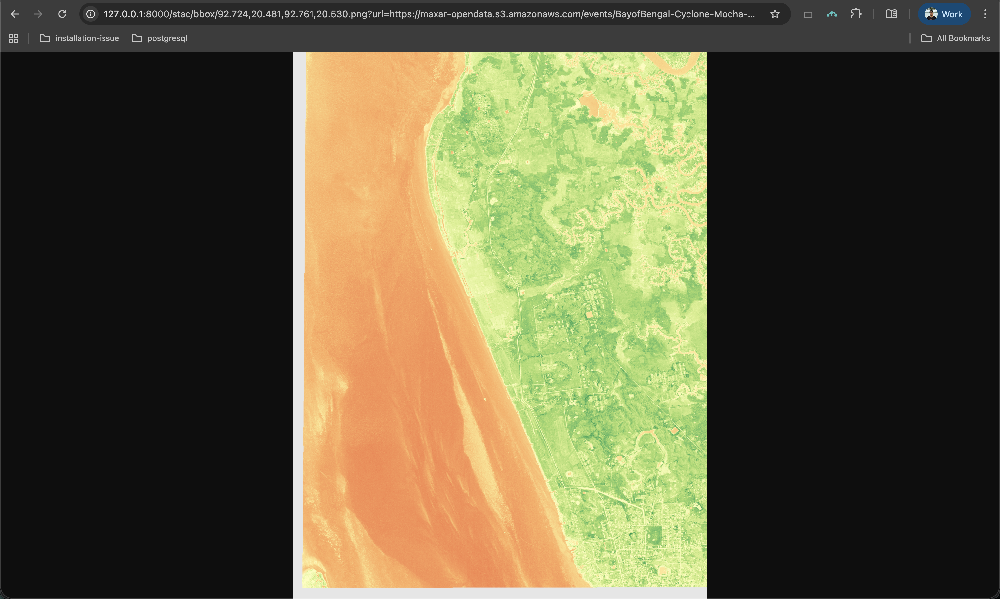
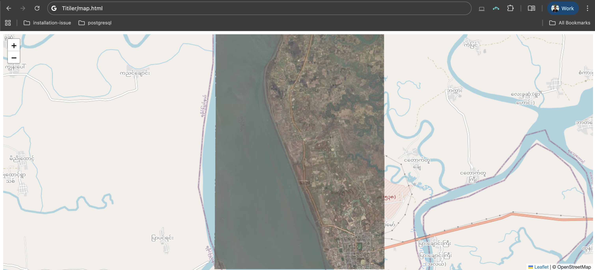

TiTiler with STAC
In our previous post, we set up TiTiler for serving Cloud-Optimized GeoTIFFs. Now let’s explore how TiTiler works with STAC (SpatioTemporal Asset Catalog) - a standardized way to describe and organize geospatial data.
Prerequisites: For Python environment and TiTiler setup, check out the Getting Started with TiTiler post.
What is STAC?
STAC is like a library catalog for satellite imagery. Instead of searching through folders, you get structured JSON files that tell you:
- What: Type of imagery, bands available, resolution
- Where: Geographic location (bounding box, geometry)
- When: Capture date and time
- How: Direct links to the actual data files (assets)
Our Example Dataset
Throughout this tutorial, we’ll use openly available Maxar satellite imagery from the Bay of Bengal Cyclone Mocha event:
https://maxar-opendata.s3.amazonaws.com/events/BayofBengal-Cyclone-Mocha-May-23/ard/46/033111333030/2023-05-22/10300110E84B5A00.jsonThis STAC item contains:
| Asset | Description | Bands |
|---|---|---|
visual |
True color RGB | Red, Green, Blue |
ms_analytic |
Multispectral | Coastal, Blue, Green, Yellow, Red, RedEdge, NIR1, NIR2 |
pan_analytic |
Panchromatic | Single band (high resolution) |
data-mask |
Valid data mask | Single band |
Tip: Explore other open datasets at STAC Index to practice with different imagery
Setting Up TiTiler for STAC
Make sure your main.py includes the STAC router:
from fastapi import FastAPI
from titiler.core.factory import TilerFactory, MultiBaseTilerFactory
from starlette.middleware.cors import CORSMiddleware
from rio_tiler.io import STACReader
app = FastAPI(title="TiTiler")
app.add_middleware(
CORSMiddleware,
allow_origins=["*"],
allow_credentials=True,
allow_methods=["*"],
allow_headers=["*"],
)
# COG endpoints
cog = TilerFactory()
app.include_router(cog.router, prefix="/cog", tags=["COG"])
# STAC endpoints
stac = MultiBaseTilerFactory(reader=STACReader)
app.include_router(stac.router, prefix="/stac", tags=["STAC"])
@app.get("/")
def read_index():
return {"message": "Welcome to TiTiler!"}What’s new for STAC: We import STACReader from rio_tiler.io and use MultiBaseTilerFactory (instead of TilerFactory) to create STAC endpoints - this factory understands how to read multiple assets from a single STAC item.
Start the server:
uvicorn main:app --reloadOpen your browser and go to: http://127.0.0.1:8000/docs - Explore the interactive API documentation.

1. Getting STAC Item Info /stac/info:
Before visualizing, let’s understand what’s in our STAC item. The /stac/info endpoint returns metadata about available assets and their properties.
Basic Info Request
http://127.0.0.1:8000/stac/info?url=https://maxar-opendata.s3.amazonaws.com/events/BayofBengal-Cyclone-Mocha-May-23/ard/46/033111333030/2023-05-22/10300110E84B5A00.jsonInfo for Specific Asset
To get detailed information about a specific asset:
http://127.0.0.1:8000/stac/info?url=https://maxar-opendata.s3.amazonaws.com/events/BayofBengal-Cyclone-Mocha-May-23/ard/46/033111333030/2023-05-22/10300110E84B5A00.json&assets=visual
2. Quick Preview: /stac/preview
The /stac/preview endpoint generates a downsampled image of your data - perfect for quick visualization.
Preview the Visual Asset (RGB)
http://127.0.0.1:8000/stac/preview?url=https://maxar-opendata.s3.amazonaws.com/events/BayofBengal-Cyclone-Mocha-May-23/ard/46/033111333030/2023-05-22/10300110E84B5A00.json&assets=visualTrue Color visual asset:

Preview with Output Format
You can specify the output format:
# JPEG output (smaller file size)
http://127.0.0.1:8000/stac/preview.jpg?url=https://maxar-opendata.s3.amazonaws.com/events/BayofBengal-Cyclone-Mocha-May-23/ard/46/033111333030/2023-05-22/10300110E84B5A00.json&assets=visual
# WebP output (modern format, good compression)
http://127.0.0.1:8000/stac/preview.webp?url=https://maxar-opendata.s3.amazonaws.com/events/BayofBengal-Cyclone-Mocha-May-23/ard/46/033111333030/2023-05-22/10300110E84B5A00.json&assets=visual3. Map Tiles: /stac/tiles/{tileMatrixSetId}/{z}/{x}/{y}
For web maps, you need tiles - small image pieces that load progressively as users pan and zoom. This is the most powerful endpoint for building interactive maps.
Finding Tile Coordinates (Z, X, Y)
To request a specific tile, you need to know its coordinates. You can calculate these from the STAC item’s bounding box using the mercantile library.
Important: STAC items have two types of bounding boxes:
bbox- Always in WGS84 (lon/lat) - use this for tile calculationsproj:bbox- In the asset’s projection (e.g., UTM meters) - don’t use this directly
import httpx
import mercantile
# Fetch the STAC item
stac_url = "https://maxar-opendata.s3.amazonaws.com/events/BayofBengal-Cyclone-Mocha-May-23/ard/46/033111333030/2023-05-22/10300110E84B5A00.json"
item = httpx.get(stac_url).json()
# Get the WGS84 bbox (not proj:bbox!)
bbox = item["bbox"] # [92.724, 20.481, 92.761, 20.530]
# Calculate center point
lon = (bbox[0] + bbox[2]) / 2 # 92.743
lat = (bbox[1] + bbox[3]) / 2 # 20.506
zoom = 15
# Get the tile containing this point
tile = mercantile.tile(lon, lat, zoom)
print(f"z={tile.z}, x={tile.x}, y={tile.y}")
# Output: z=15, x=24825, y=14476Tip: Install mercantile with
pip install mercantile
Basic Tile Request
http://127.0.0.1:8000/stac/tiles/WebMercatorQuad/15/24825/14476.png?url=https://maxar-opendata.s3.amazonaws.com/events/BayofBengal-Cyclone-Mocha-May-23/ard/46/033111333030/2023-05-22/10300110E84B5A00.json&assets=visual
URL breakdown:
WebMercatorQuad: Standard web map projection (EPSG:3857)15: Zoom level24825: X tile coordinate14476: Y tile coordinate.png: Output format
Using assets Parameter
The assets parameter specifies which asset(s) to render:
# Single asset (visual - RGB)
&assets=visual
# Multiple assets (for band combinations from different assets)
&assets=ms_analytic&assets=pan_analyticUsing asset_bidx - Band Selection
When working with multi-band asset, use asset_bidx to select specific bands:
# Select band 3 (Green) from ms_analytic
http://127.0.0.1:8000/stac/tiles/WebMercatorQuad/15/24825/14476.png?url=https://maxar-opendata.s3.amazonaws.com/events/BayofBengal-Cyclone-Mocha-May-23/ard/46/033111333030/2023-05-22/10300110E84B5A00.json&assets=ms_analytic&asset_bidx=ms_analytic|3Band indices for ms_analytic:
| Index | Band Name | Common Name |
|---|---|---|
| 1 | BAND_C | Coastal |
| 2 | BAND_B | Blue |
| 3 | BAND_G | Green |
| 4 | BAND_Y | Yellow |
| 5 | BAND_R | Red |
| 6 | BAND_RE | Red Edge |
| 7 | BAND_N | NIR (Near Infrared) |
| 8 | BAND_N2 | NIR2 |
Creating RGB Composites with asset_bidx
Create false-color composites by specifying 3 bands:
# Natural Color (Red, Green, Blue - bands 5,3,2)
&assets=ms_analytic&asset_bidx=ms_analytic|5,3,2
# False Color Infrared (NIR, Red, Green - bands 7,5,3)
&assets=ms_analytic&asset_bidx=ms_analytic|7,5,3
# Agriculture (NIR, Green, Blue - bands 7,3,2)
&assets=ms_analytic&asset_bidx=ms_analytic|7,3,2Using rescale - Adjust Value Range
Important: Raw satellite data often has values outside the 0-255 display range. Without rescaling, images may appear black or washed out.
Tip: If your image appears black or too dark, try adjusting the rescale max value. Adjust based on your data min-max.
Full example - False Color Infrared with rescale:
http://127.0.0.1:8000/stac/tiles/WebMercatorQuad/15/24825/14476.png?url=https://maxar-opendata.s3.amazonaws.com/events/BayofBengal-Cyclone-Mocha-May-23/ard/46/033111333030/2023-05-22/10300110E84B5A00.json&assets=ms_analytic&asset_bidx=ms_analytic|7,5,3&rescale=0,2000
Using expression - Band Math
The expression parameter lets you perform calculations across bands. This is powerful for creating vegetation indices, water indices, and more.
Syntax: Bands are referenced as asset_name_b{index} (e.g., ms_analytic_b7 for NIR band).
Warning: The
+sign in URLs is interpreted as a space! Use%2Binstead of+in your expressions, otherwise you’ll get a syntax error.
NDVI (Normalized Difference Vegetation Index)
NDVI highlights vegetation: (NIR - Red) / (NIR + Red)
http://127.0.0.1:8000/stac/tiles/WebMercatorQuad/15/24825/14476.png?url=https://maxar-opendata.s3.amazonaws.com/events/BayofBengal-Cyclone-Mocha-May-23/ard/46/033111333030/2023-05-22/10300110E84B5A00.json&assets=ms_analytic&expression=(ms_analytic_b7-ms_analytic_b5)/(ms_analytic_b7%2Bms_analytic_b5)&rescale=-1,1
NDWI (Normalized Difference Water Index)
NDWI highlights water bodies: (Green - NIR) / (Green + NIR)
http://127.0.0.1:8000/stac/tiles/WebMercatorQuad/15/24825/14476.png?url=https://maxar-opendata.s3.amazonaws.com/events/BayofBengal-Cyclone-Mocha-May-23/ard/46/033111333030/2023-05-22/10300110E84B5A00.json&assets=ms_analytic&expression=(ms_analytic_b3-ms_analytic_b7)/(ms_analytic_b3%2Bms_analytic_b7)&rescale=-1,1Simple Band Ratio
# NIR/Red ratio (vegetation vigor)
&expression=ms_analytic_b7/ms_analytic_b5Using colormap_name - Apply Color Palettes
When using expressions (which return single-band results), apply colormaps to make the data meaningful:
NDVI with Colormap
http://127.0.0.1:8000/stac/tiles/WebMercatorQuad/15/24825/14476.png?url=https://maxar-opendata.s3.amazonaws.com/events/BayofBengal-Cyclone-Mocha-May-23/ard/46/033111333030/2023-05-22/10300110E84B5A00.json&assets=ms_analytic&expression=(ms_analytic_b7-ms_analytic_b5)/(ms_analytic_b7%2Bms_analytic_b5)&colormap_name=rdylgn&rescale=-1,1colormap_name=rdylgn: Red-Yellow-Green colormap (red=low NDVI, green=high NDVI)rescale=-1,1: NDVI values range from -1 to 1
Water Index with Blue Colormap
http://127.0.0.1:8000/stac/tiles/WebMercatorQuad/15/24825/14476.png?url=https://maxar-opendata.s3.amazonaws.com/events/BayofBengal-Cyclone-Mocha-May-23/ard/46/033111333030/2023-05-22/10300110E84B5A00.json&assets=ms_analytic&expression=(ms_analytic_b3-ms_analytic_b7)/(ms_analytic_b3%2Bms_analytic_b7)&colormap_name=blues&rescale=-1,1Visualize at the Image Extent or Crop to Custom Bounds
NDVI on Image Extent
http://127.0.0.1:8000/stac/bbox/92.724,20.481,92.761,20.530.png?url=https://maxar-opendata.s3.amazonaws.com/events/BayofBengal-Cyclone-Mocha-May-23/ard/46/033111333030/2023-05-22/10300110E84B5A00.json&assets=ms_analytic&expression=(ms_analytic_b7-ms_analytic_b5)/(ms_analytic_b7%2Bms_analytic_b5)&colormap_name=rdylgn&rescale=-1,1
URL breakdown:
/stac/bbox/92.724,20.481,92.761,20.530.png- Bounding box:minLon,minLat,maxLon,maxLat
- Get these values from the STAC item’s
bboxfield
Using with Leaflet
<!DOCTYPE html>
<html>
<head>
<title>STAC + TiTiler Map</title>
<link rel="stylesheet" href="https://unpkg.com/leaflet@1.9.4/dist/leaflet.css" />
<script src="https://unpkg.com/leaflet@1.9.4/dist/leaflet.js"></script>
</head>
<body>
<div id="map" style="width: 100%; height: 600px;"></div>
<script>
var map = L.map('map').setView([20.506, 92.743], 14);
// Base map
L.tileLayer('https://{s}.tile.openstreetmap.org/{z}/{x}/{y}.png', {
attribution: '© OpenStreetMap'
}).addTo(map);
// TiTiler STAC layer
var stacUrl = 'https://maxar-opendata.s3.amazonaws.com/events/BayofBengal-Cyclone-Mocha-May-23/ard/46/033111333030/2023-05-22/10300110E84B5A00.json';
var tileUrl = `http://127.0.0.1:8000/stac/tiles/WebMercatorQuad/{z}/{x}/{y}.png?url=${encodeURIComponent(stacUrl)}&assets=visual`;
L.tileLayer(tileUrl, {
opacity: 0.8,
maxZoom: 18
}).addTo(map);
</script>
</body>
</html>To view the map:
- Save the code as
map.html
- Make sure TiTiler server is running (
uvicorn main:app --reload)
- Open
map.htmlin your browser (double-click or drag into browser)

Common Issues
Asset not found: Check asset names in the STAC item JSON - they’re case-sensitive.
Black/white tiles: Your data values might be outside the default range. Use rescale to adjust.
Slow tiles: Large files take time. Consider using overviews or lower zoom levels for previews.
Expression errors: Make sure band references match exactly: assetname_b{number}.